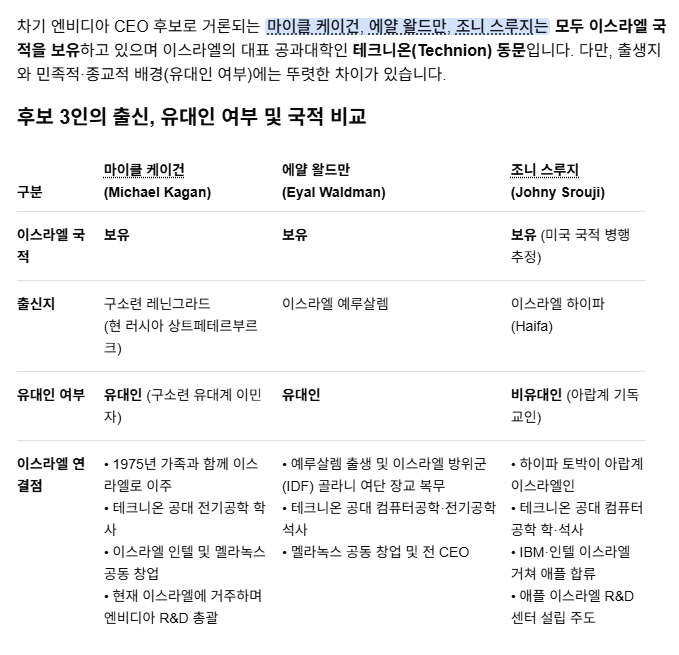

이스라엘

이스라엘
nvidia도 끝났네
유대인묻었네 조졌농
케이건드라카어디
AIPAC/Epstein/Deepstate가 저런 황금알낳는걸 놔둘리가 없음...


황가놈이 임원들 닦달해가며 열심히 멜라녹스 인수해놨더니
멜라녹스 출신한테 먹히게 생겼네 ㅋㅋ
언론이 개난리 피더니 어쩐지
흠.. 단기적으론 죄다 나쁘진않아보이기야한데
근대 저사람들보다 황회장이 능력 압도적인데?
야... 미생이 황인이라서 짤린거고 미국 백인이 올거라더니 진짜네
미국 백인도 아니고 유대인이야
이스라엘 같은 새끼 vs. ㅈ같은 새끼
어느 게 더 심한 욕임?
소설:
중국이 대만을 침공하기 전, nVdaya의 모든 주요자산을 미국으로 옮기라는 지령이 떨어지자 존슨 홍 사장은 반발한다. 미국의 이너서클은 존슨을 불미스러운 일에 연루시켜 실각하게 만든 뒤 새로운 인물을 사장 자리에 앉힌다.
한편 잭 라이언은 nVdaya 의 최신기술이 중국 침공을 막는 역할을 하고 있다는 사실을 깨닫고 대만으로 향한다. 현지에서 그를 맞이한 의문의 중국여인은 그에게 뜨거운 육탄공세를 펼치는데…
누군가 합리적 의심을 제기해도 바로 음모론 딱지 붙이고
음모론자=지구 평평하다 주장하는 능지 ㅋ_ㅋ 프레임 씌운 후
조롱과 조소로 조리돌림 하고 보내버림...
ㄹㅇ 대중조작 시스템 잘 만들어 놓음
미국은 아직 독립하지못했다
히선생님 ㅠㅠ
또 너야 유대인?

유머인 카르텔이 ai 완전히 집어삼키려고 보냈구만